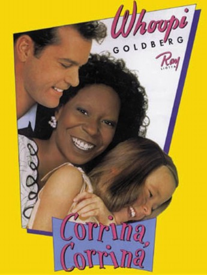

#5711 Corrina, Corrina
 gesehen am 24.03.2017
gesehen am 24.03.2017
 
 IMDB-Wertung: 6.5 / 10
IMDB-Wertung: 6.5 / 10  Tomatometer: 39
Tomatometer: 39  Metascore: 0
Metascore: 0 
Nach dem Tod seiner Frau sucht Werbetexter Manny nach einem Dienstmädchen, das sich um den Haushalt und seine Tochter Molly kümmern soll. Er entscheidet sich für die Afroamerikanerin Corinna, die zwar nicht kochen kann, aber mit ihrer urigen Persönlichkeit umgehend einen Draht zu Molly findet, die seit Mutters Tod kein Wort mehr gesprochen hat. Die lebenslustige Haushaltsperle schafft es schließlich, das Mädchen wieder zum Reden zu bringen, und selbst Manny kann sich dem Charme von Corinna nicht entziehen.
Jahr: 1994
Dauer: 115 Minuten
FSK: 6
Land: USA Studio: New Line CinemaTonspuren: DD5.1 - ,
Untertitel: Deutsch, Englisch,
Auflösung: 720p (1280x690) Größe: 3901 MB
Genre: Drama, Komödie, Liebe
Regisseur: Jessie Nelson
Drehbuch: Won-Chan Hong
Soundtrack:
Darsteller:
- Lucy Webb als Shirl
- Tina Majorino als Molly Singer
 Ray Liotta als Manny Singer
Ray Liotta als Manny Singer Don Ameche als Grandpa Harry
Don Ameche als Grandpa Harry Larry Miller als Sid
Larry Miller als Sid Joan Cusack als Jonesy
Joan Cusack als Jonesy- Karen Leigh Hopkins als Liala Sheffield
 Lin Shaye als Repeat Nanny
Lin Shaye als Repeat Nanny- Marcus Toji als Tommy Wang
 Louis Mustillo als Joe Allechinetti
Louis Mustillo als Joe Allechinetti Whoopi Goldberg als Corrina Washington
Whoopi Goldberg als Corrina Washington- Patrika Darbo als Wilma, Car Hop
- Don Pugsley als Delivery Man 1
- Lynette Walden als Annie
 Brent Spiner als Brent Witherspoon
Brent Spiner als Brent Witherspoon- Bryan Gordon als Business Associate
 Jenifer Lewis als Jevina
Jenifer Lewis als Jevina- Harold Sylvester als Frank
 Wendy Crewson als Jenny Davis
Wendy Crewson als Jenny Davis Steven Williams als Anthony T. Williams
Steven Williams als Anthony T. Williams Courtland Mead als Howard Davis
Courtland Mead als Howard Davis- Tommy Bertelsen als Bratty Boy
- K.T. Stevens als Mrs. Morgan
- Christopher Chisholm als John Brennan
- Roz Witt als Mrs. Murphy
- Yonda Davis als Woman in Audience
- Nat 'King' Cole als Himself , archive footage, uncredited
- Shari Lewis als Herself , archive footage, uncredited
 Jonathan Winters als Himself , archive footage, uncredited
Jonathan Winters als Himself , archive footage, uncredited- Noreen Hennessey als High Heels
- Erica Yohn als Grandma Eva
- Juney Ellis als Miss O'Herlihy
- Mimi Lieber als Rita Lang
- Pearl Huang als Mrs. Wang
- Sean Moran als 2nd Delivery Man
- Jevetta Steele als Club Singer
- Curtis Williams als Percy
- Briahnna Odom als Lizzie
- Ashley Taylor Walls als Mavis
- Asher Metchik als Lewis Davis
- Sue Carlton als Mrs. Werner
- Kyle Orsi als Gregory
- Maud Winchester als Mrs. Rodgers
- Bryan A. Robinson als Chubby Boy
- Deborah Landis als Mother , After school
- Chuck Abernathy als YWCA Santa Claus , uncredited
- Gene Baker als Himself, Queen for a Day , archive footage, uncredited
- Johnny Olson als Himself, Name That Tune , archive footage, uncredited
Datei: X:\1994\Corrina, Corrina (1994, FSK6, 1280x690).mkv seit 13.03.2017
Festplatte: HD 1992-1995
 Es gibt insgesamt 67 Filme in der Gruppe '1994'
Es gibt insgesamt 67 Filme in der Gruppe '1994'